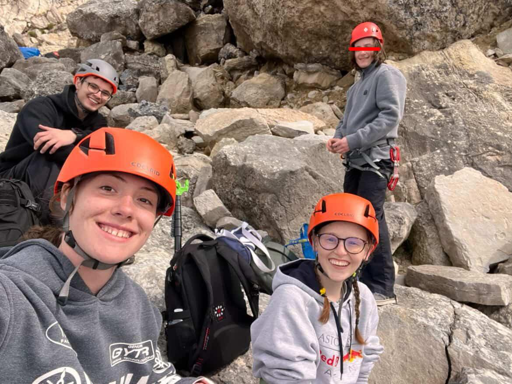
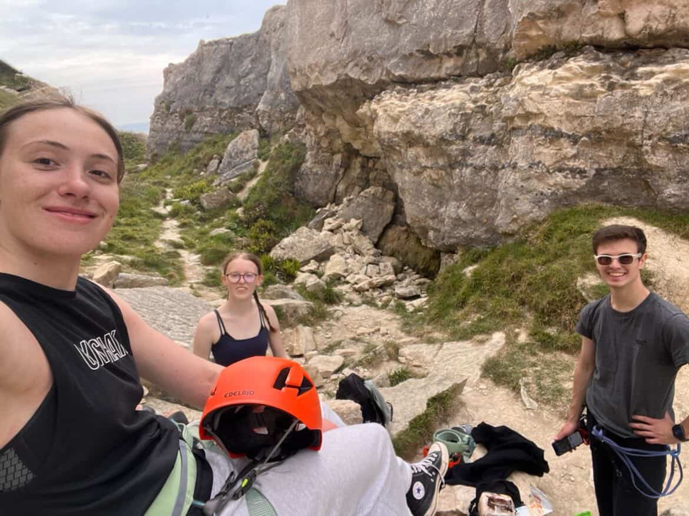
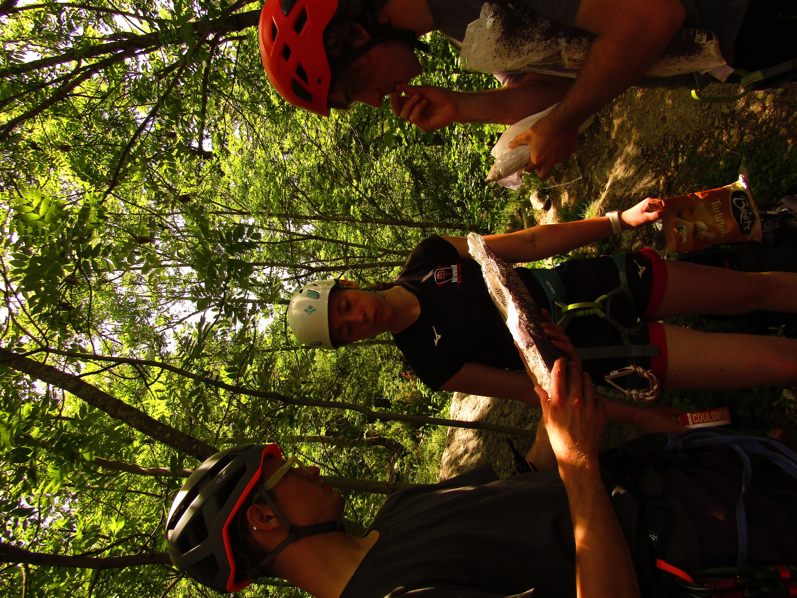
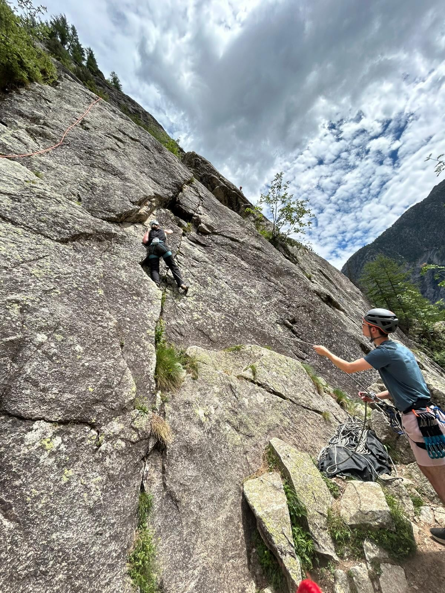
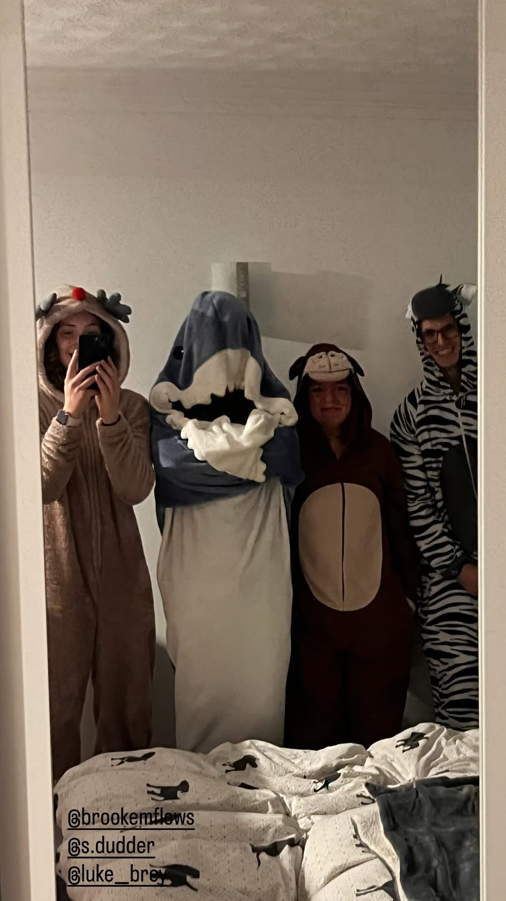
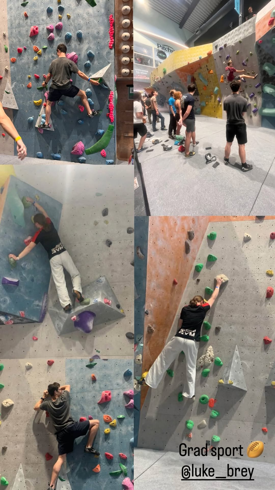

Je me souviens très bien d'avoir frappé à ta porte il y a neuf mois. Je me rappelle le moment où je t'ai rencontrée. Je me souviens de notre conversation et de la façon dont j'ai appris à te connaître au cours de cette brève soirée. C'est amusant de penser au temps qui s'est écoulé depuis notre première rencontre et à quel point ma vie a changé grâce à elle. Julie, j'ai voulu t'écrire cette lettre pour te montrer à quel point je t'apprécie :).
Je me souviens de la fois où nous avons vraiment échangé après notre première rencontre. celle où toi, Alister et Fleur êtes allés à Summit pour une séance d'escalade en soirée. Je me rappelle t'avoir aidé à grimper (What an odd word to say "to climb" btw) ce soir-là. Qui aurait cru que cette soirée marquerait le début de notre solide amitié? Je me souviens que, dès le début, j'ai clairement perçu que tu étais une personne très bienveillante. Tu as toujours dégagé une atmosphère véritablement réconfortante; une atmosphère qui met les autres en confiance, qui les rend heureux et leur permet d'être eux-mêmes en ta compagnie. Vous êtes vraiment attachant.
Plus tard, lors de notre voyage à Portland, je me souviens avoir appris à te connaître et avoir passé du temps avec toi. J'ai commencé à réaliser que j'avais tout à fait raison au sujet de ta gentillesse; j'ai vu à quel point tu es authentique, altruiste et bienveillante. J'ai aussi vu la façon dont Alister te traitait, et je n'arrivais pas à comprendre comment il pouvait traiter ainsi quelqu'un d'aussi gentil que toi. quelqu'un à qui il était censé tenir. C'est à ce moment-là que j'ai vraiment commencé à perdre le respect que j'avais pour lui. Depuis, j'ai compris quel genre de personne il est et je sais que ce n'est pas un homme bien. J'étais peiné pour toi, de devoir supporter tout ce qu'il t'a fait subir. Tu ne mérites vraiment pas cela. Tu es une personne vraiment formidable, Julie, et malheureusement, je ne sais pas si tu vois ce que je vois. Tu mérites vraiment le bonheur. :)


Quand je te vois, Julie, je perçois tant de qualités que tu ne soupçonnes peut-être même pas;
j'ai envie de mettre en lumière tout ce qui fait de toi une personne aussi formidable.
Julie, quand je te regarde, je vois quelqu'un d'une immense gentillesse. Tu cherches toujours à rassembler les gens et à faire en sorte que personne ne se sente exclu;
tu veilles à ce que chacun soit à l'aise et serein dans la situation où il se trouve.
Je me souviens très bien d'une fois en particulier.
j'étais angoissé par des questions sur ma propre identité, et tu as proposé de discuter avec moi pour t'assurer que j'allais bien.
Tu as pris du temps pour moi, pour vérifier que tout allait bien et que je ne stressais pas. Je ne saurais dire à quel point je t'en ai été reconnaissant.
En ta compagnie, je me sens incroyablement bien. J'ai le sentiment que tout va s'arranger, que tout ira bien dans le monde et que mes sources d'angoisse vont disparaître. Je me sens en paix;
tu apportes de la sérénité aux autres et tu leur procures un sentiment de sécurité.
Ta simple présence rend l'atmosphère plus chaleureuse.
Tu écoutes vraiment ce que disent les autres.
Chaque fois que je t'ai parlé de mes inquiétudes, même pour des choses futiles, je n'ai jamais eu l'impression que tu étais absente de la conversation. Tu écoutes, tu comprends et tu aides autant que tu le peux.
C'est une qualité incroyable chez toi.
je sais que je pourrai toujours me confier à quelqu'un et que tu seras toujours là pour m'écouter.
Dans le même ordre d'idées, tu retiens ce que les autres te disent!
Cela peut sembler anodin, mais en réalité, c'est très important.
Quand je te parle, je sens que tu t'intéresses vraiment à moi, car tu te souviens de détails insignifiants, de choses auxquelles les autres ne pensent pas forcément.
Tu fais en sorte que je me sente compris et écouté.
J'ai aussi remarqué que tu es très, très intelligente.
Je ne sais pas si tu réalises vraiment, au fond de toi, à quel point tu es intelligente, mais pour moi, c'est une évidence.
Je sais que tu vas probablement contester cela, mais écoute-moi bien.
j'ai relevé de nombreux points qui, à mes yeux, témoignent de ton intelligence.
J'ai remarqué la façon dont tu parles des sujets qui te passionnent vraiment,
tu essaies de les expliquer à ceux qui sont prêts à t'écouter.
D'ailleurs, tu t'y prends très bien pour expliquer les choses et tu sais parfaitement aider à comprendre des personnes qui n'avaient jamais fait de recherches sur le sujet auparavant.
Prends mon exemple: je n'avais aucune formation en médecine vétérinaire, et pourtant j'ai retenu ce que tu m'as appris sur les urolithes (this is an off word, i thought it may be just slightly different in french) et leur formation.
(i hope ANY of this makes sense, I wrote this in a long stream of consciousness)



Julie, je suis généralement quelqu'un de très méfiant par le passé, j'ai laissé très peu de gens franchir mes barrières,
car je craignais leurs actes et leurs paroles une fois qu'ils auraient découvert qui je suis vraiment.
Je redoutais ce qu'ils penseraient si je baissais la garde, et je craignais qu'ils n'essaient de me faire du mal pour leur propre intérêt.
Pourtant, tu es l'une des rares personnes à m'avoir mis suffisamment en confiance pour que je baisse véritablement ma garde, et tout cela grâce à la personne exceptionnelle que tu es.
Julie, tu es l'une des seules personnes à qui j'ai vraiment permis de voir qui je suis au fond de moi.
Merci de ne pas avoir pris la fuite et de ne pas t'en être servi contre moi.
Je sais que je ne suis pas parfait.
Je sais que je suis sujet au stress et à l'anxiété.
Je sais qu'il y a des moments où je m'enferme dans mes pensées sans réussir à en sortir.
Je sais que je peux parfois agir bêtement.
Personne n'est parfait,
la vie est faite de hauts et de bas, et tout ce qu'on peut faire, c'est aller de l'avant en espérant le meilleur.
Mais merci de m'avoir supporté toutes ces fois.
Je ne saurais vraiment exprimer ce que cela représente pour moi de savoir que je peux te faire confiance.
L'univers est apparu il y a environ 14 milliards d'années.
L'humanité n'a commencé à fouler le sol terrestre qu'il y a quelque 200 000 ans.
Notre histoire documentée ne remonte, elle, qu'à environ 5 000 ans. Notre petite parenthèse d'existence
Englobant chaque personne dont nous avons jamais entendu parler ou dont nous avons appris l'existence
ne représente qu'une fraction infime, bien inférieure à un cent millième de pour cent, de la durée totale de l'univers. Combien d'êtres humains ont vécu, en un nombre incalculable ?
Combien de personnes auront existé, pour finalement succomber à cette certitude omniprésente qu'est la mort?
Et pourtant, nous sommes toujours là, toi et moi ; nous sommes en vie.
Il existe une infinité de combinaisons génétiques possibles, capables de faire naître une personne totalement différente de celle que nous sommes.
Et pourtant, nous sommes nés, nous vivons à la même époque et nous avons eu la chance de nous rencontrer dans cette vie,
malgré l'absurdité de l'univers que nous habitons, nous nous sommes rencontrés.
N'est-ce pas incroyable ?
Nous nous rencontrons, en ce moment, dans cette existence.
Je trouve que c'est une chance extraordinaire de te connaître.
Alors que les probabilités d'exister sont si minces, que serait la vie si nous ne nous étions jamais rencontrés?

Il m'arrive de repenser à une conversation que nous avons eue.
C'était le 9 mai.
Je ne sais pas si tu te souviens exactement de l'occasion.
Au cas où tu l'ignorerais, c'était le jour du Gradsport.
Je me souviens de notre conversation au sujet d'Alister,
je me rappelle que tu te demandais si tu avais bien fait de lui faire confiance et que tu t'inquiétais de la tournure que prenaient les choses.
je me rappelle que tu te demandais si tu avais bien fait de lui faire confiance et que tu t'inquiétais de la tournure que prenaient les choses.
Il m'arrive de repenser à cette discussion, et je tiens à ce que tu comprennes une chose.
je t'apprécie énormément et je tiendrai toujours à toi.
Quoi qu'il arrive ou quel que soit le chemin que nous emprunterons, tant que tu le souhaites, je ne partirai pas et je resterai à tes côtés. :)
ps, i hope this made you smile even a little bit. im not very good at writing letters :)
By Your Side, Apple Sourz Guy